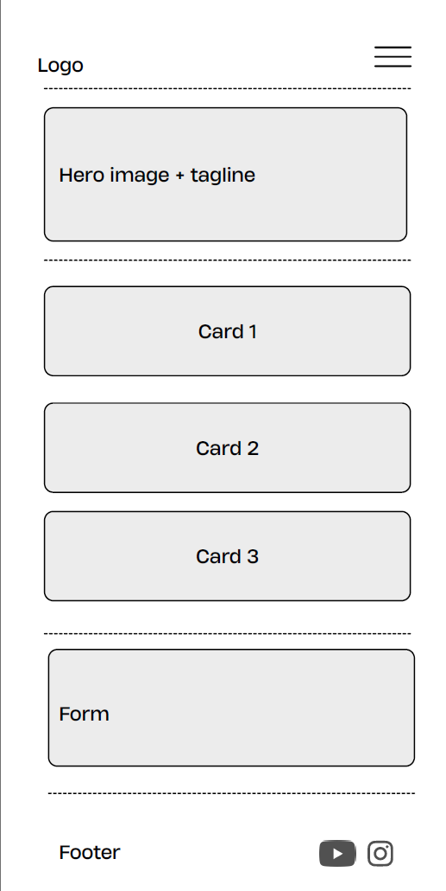
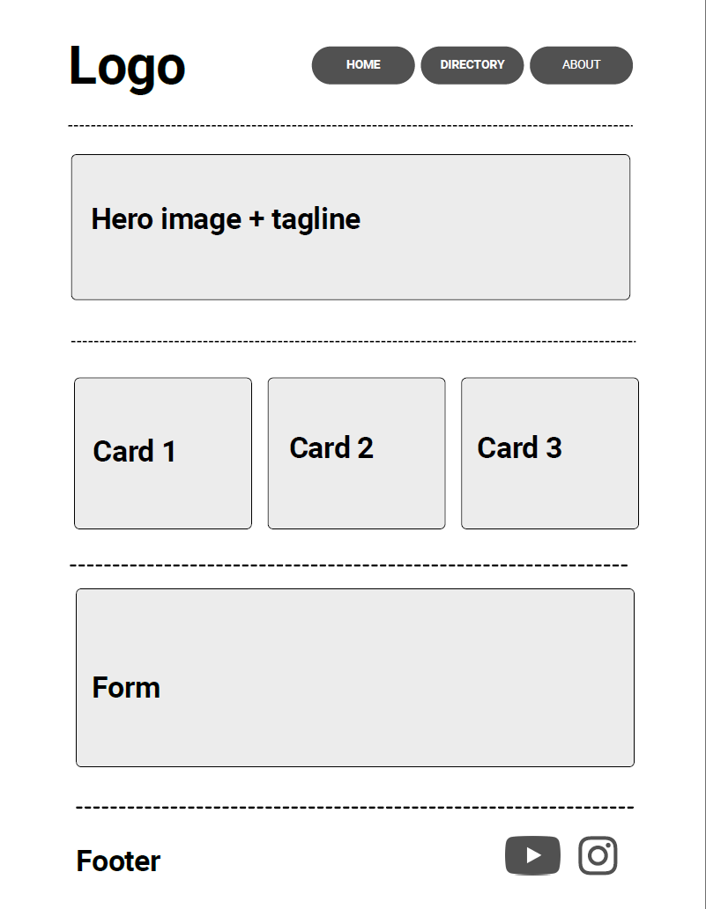

1. Site Name
Site Name: Lima Coffee Map
This name represents a map with the best coffee shops at Lima Peru
2. Site Purpose
Lima Coffee Map is a directory that helps people discover good cafés and restaurants around Lima. The site will:
- Provide information about recommended spots, including district, specialty, and price range.
- Let visitors view details about each place through a pop-up modal.
- Allow visitors to suggest a new place through a recommendation form.
I enjoy discovering new places and going out with friends, so this project lets me apply what I'm learning in the course to something I'm genuinely interested in.
3. Scenarios
4. Color Schema
The palette is based on coffee tones to match the subject of the site.
Headings, nav
Page background
Links, buttons, accents
Body text
5. Typography
Two fonts are used throughout the site and in this document:
- Poppins (sans-serif) - used for all headings and labels, to give the site a clean, modern feel.
- Lora (serif) - used for body text, since it is easy to read in longer paragraphs.
This is a Poppins heading
This is a paragraph set in Lora, the font that will be used for all of the body text on the Lima Coffee Map website, just like this sentence demonstrates.
6. Home Page Wireframe
Below are the wireframes of the home page for a mobile view and a wider (desktop) view.
Mobile View (320px)

Wider View (Desktop)
